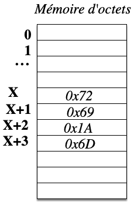

Les bases de l'assembleur
Task3 -- Utilisation de la mémoire
Step1 -- Les instructions d'accès à la mémoire
L'accès à la mémoire n'est pas
la chose la plus simple avec le processeur ARM. Cela est dû à la
taille des instructions. Toutes les instructions du processeur ARM
sont sur 32 bits, soit 4 octets. Une adresse est codée sur au moins 32
bits, il est donc clairement impossible d'insérer une adresse dans une
instruction, l'instruction n'est tout simplement pas assez grande. La solution utilisée dans le processeur ARM est de stocker dans un registre l'adresse à laquelle on veut accéder, les intsructions ldr et str permettent ensuite d'accéder à la mémoire en lecture ou écriture. Exemple:
ldr r1, [r0]
str r1, [r0]
L'instruction ldr est destinée au chargement d'un registre depuis la mémoire. Dans l'exemple, elle charge le registre r1 avec la valeur des 4 cases mémoire se situant à partir de l'adresse contenue dans r0.
Notez l'utilisation de crochets pour indiquer l'accès à la mémoire.
Supposons que r0 contienne la valeur X, à la suite de l'instruction ldr r1, [r0], le registre r1 contiendra la valeur des 4 octets se trouvant aux adresses X, X+1, X+2 et X+3.

L'instruction str fonctionne symétriquement en écrivant la valeur contenue dans le registre r1 en mémoire à l'adresse contenue dans le registre r0.
Il reste à trouver le moyen de stocker une adresse de 32 bits dans un
registre.
L'instruction move reg, #imm permet de stocker une valeur immédiate dans un registre mais celle-ci ne peut dépasser 8 bits. En fait c'est un peu plus compliqué (voir la documentation sur ARM fournie section 1.4).
Il est possible de faire un calcul permettant de calculer une valeur sur 32 bits à partir de morceaux sur 8 bits. La suite d'instruction suivante stocke la valeur 0x12345678 dans le registre r0.
mov r0, #0x12
lsl r0, #8
add r0,r0,#0x34
lsl r0, #8
add r0,r0,#0x56
lsl r0, #8
add r0,r0,#0x78l'instruction lsl r0, #8 décale à gauche de 8 bits la valeur de r0.
Au vue de la documentation ARM, écrivez un programme ARM équivalent
en seulement 4 instructions.
Dans tous les cas c'est un peu compliqué et de plus, il faudrait
connaitre explicitement l'adresse à manipuler. Hors nous ne la
connaissons pas quand nous écrivons le programme; l'adresse où sera
stocké le programme (et donc les variables) en mémoire n'est connue
qu'au moment de son exécution.
Une idée simple est d'utiliser la valeur se trouvant dans le compteur
programme (pc)
pour calculer l'adresse d'une étiquette se trouvant dans le programme.
Une variable peut être référencée par une étiquette à l'aide du mot .word
Essayons le programme suivant:
ldr r0, [pc,#20]
ldr r1, [r0]
add r1, r1, #1
str r1, [r0]
var: .word 0x1234 L'instruction ldr r0,[pc,#20] stocke dans le registre r0 la valeur se trouvant à l'adresse contenue dans pc + 20.
La directive .word
permet de mettre en mémoire une valeur sur 32 bits (ici 0x1234, en
hexadécimal)
Essayez d'exécuter les deux premières instructions. Le registre r1 contient il la valeur se trouvant à l'étiquette var ?
Regarder la valeur de pc au moment de l'exécution de l'instruction ldr r0,[pc,#20]
Attention: Le debugueur donne pour la valeur de pc, l'adresse de l'instruction qui va être exécutée.
En fait ce n'est pas tout à fait vrai....
En fait, le compteur de programme est toujours en avance lors de l'exécution d'une instruction. Cela est dû à la constuction du processeur ARM qui permet d'exécuter les instructions en pipeline.
Rappelez-vous notre métaphore de la cuisine? Le chef est le processeur, son assistant est le bus système. Imaginez que notre chef a besoin de couper les oignons et les carottes. D'abord, il demande à son assistant d'aller chercher les oignons. Le chef doit attendre que l'assistant revienne avec les oignons avant de pouvoir commencer à les couper. Mais alors qu'il coupe les oignons, il peut demander à l'assistant d'aller chercher les carottes. C'est le principe du pipeline, une technique utilisée dans la plupart des chaînes de montage dans les usines du monde entier. Les processeurs font la même chose.
Le processeur ARM a un pipeline qui comporte trois étapes:
extraction, décodage et exécution. L'étape
d'extraction charge la prochaine instruction de la mémoire,
en utilisant le compteur de programme. L'étape de décodage consiste à
décoder l'instruction, en comprenant quelle instruction elle est. La
dernière étape concerne l'exécution proprement dites de l'instruction.
Donc au moment où le processeur exécute le ldr,
il charge déjà l'instruction add,
pc "pointe" déjà deux instructions plus loin.
Essayez donc le programme corrigé:
ldr r0, [pc,#8]
ldr r1, [r0]
add r1, r1, #1
str r1, [r0]
var: .word 0x1234Nous savons maintenant accéder à n'importe quelle case de la mémoire.